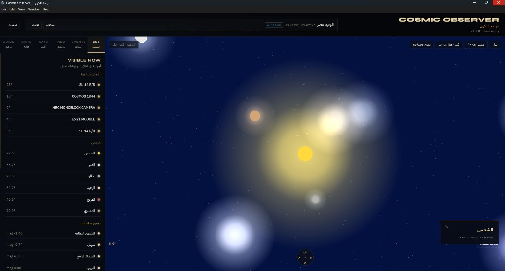

Portfolio / CV
Computer Science & Information · Software Developer
Project 01
A Windows desktop astronomy application with an interactive 3D sky, near-Earth object tracking, orbital debris, a dark-matter lensing research module, and an AI astronomy tutor — packaged as a native .exe.

Project 01 · Stack & Features
Built end-to-end in JavaScript: React + Three.js for the UI and 3D sky, Node.js/Express for local APIs and orbital math, Electron for the Windows desktop shell.
JavaScript / JSX React 18 Three.js Vite Node.js / Express astronomy-engine OpenAI SDK Electron 33 electron-builder GLSL PowerShell
electron/ — main + preloadserver/ — astronomy & data APIssrc/ — React UI + Three.jsscripts/ — build / run helpersProject 02
A pure Python data analysis system for a vertical farm. It reads a real telemetry ledger with 600 production rows and produces a clean dataset, analysis tables, charts, Excel exports, and a delivery-ready PDF report.
vertical_farm_biomass_telemetry_ledger.csv, cleans columns, parses Stack
/ Rack / Row IDs, outputs an analysis-ready dataset.
Project 02 · Libraries & Contact
Language: Python only. Raw farm CSV → organized dataset + analysis tables + charts + PDF ready for portfolio / client delivery.
Abd Alrahman Ahmed Mousa Mohamed
Phone: 01029646085
Education: حاسبات و معلومات · Age 22 · Born 6/6/2004
GitHub: github.com/engboda6
Portfolio: engboda6.github.io/portfolio
Email: abdalrahmanahmedmousa@gmail.com
Live portfolio site includes Cosmic Observer screenshots, demo video, and full project pages for both works above.